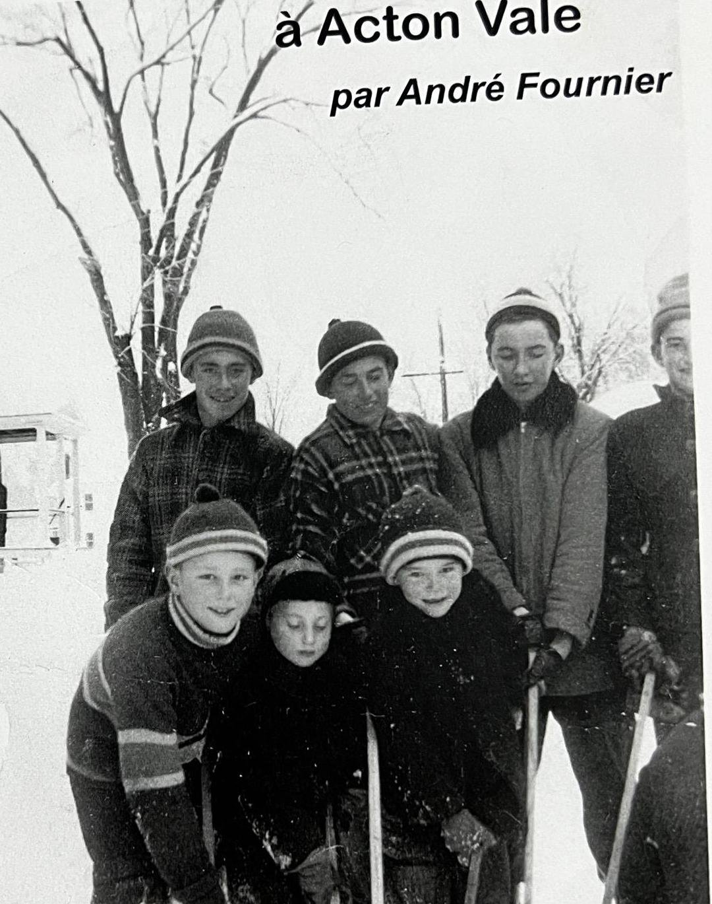
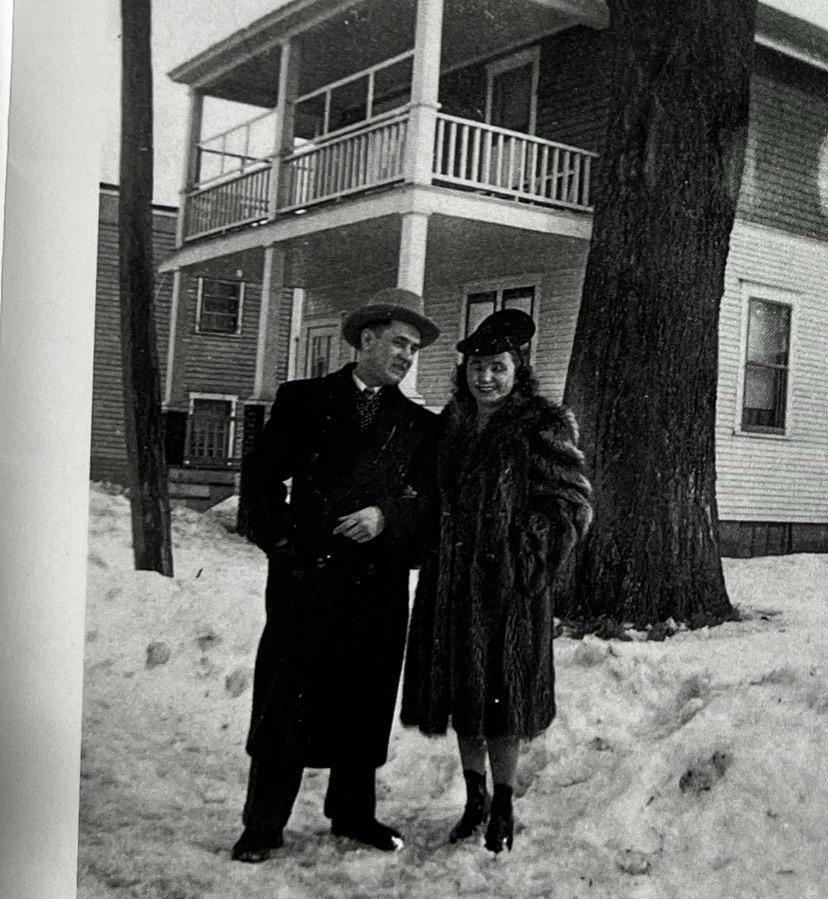
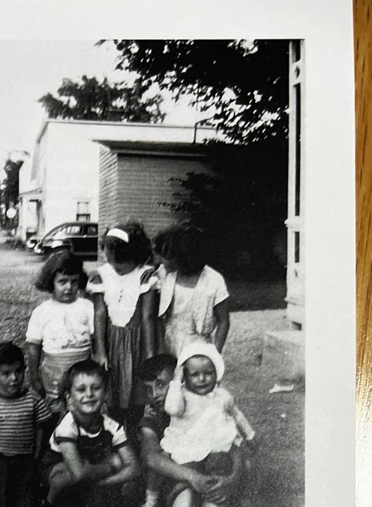
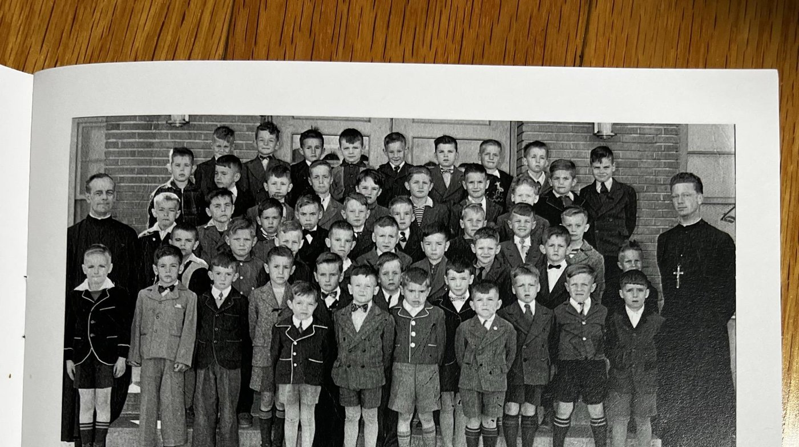

En 1955, un groupe de cousins photographiés au beau milieu de la rue Lemay, qui servait de terrain de jeu hiver comme été. En avant : André Fournier, Jean-Pierre Roy et Serge Roy. En arrière : Jean-Luc Roy, Maurice Roy, Michel Savoie et Yves Roy. Photo André Fournier.
Habiter dans la rue Lemay, au milieu du siècle dernier, c'était vivre dans un microcosme presque parfait de la société québécoise de l'époque.
Nulle part ailleurs ne pouvait-on trouver une variété aussi représentative de toutes les facettes de la vie quotidienne des années 1950.
Sur la rue Lemay s'alignaient des exploitations agricoles, des industries, des commerces et de nombreuses résidences privées. Le notable de la rue, l'entrepreneur ou le professionnel pouvait être le voisin immédiat de l'humble travailleur d'usine.
L'appellation
Ouverte dès les tout débuts du village d'Acton Vale, la rue Lemay fut d'abord nommée rue Water. En décembre 1909, le conseil municipal la renomme rue Laurier, en souvenir du passage à Acton Vale, le 9 octobre 1900, de Sir Wilfrid Laurier, alors premier ministre du Canada.
Le procès-verbal de la réunion des membres du conseil municipal de la Ville d'Acton Vale, en date du 21 janvier 1944, indique qu'on la désignera dorénavant sous le nom de rue Lemay, en l'honneur de David Lemay, un industriel qui participa, dès 1904, à y ériger la fabrique de chaussures The Acton Shoe Co. Limited. David Lemay fut également conseiller municipal de janvier 1905 à juin 1914 et maire du 26 juin 1914 au 6 mai 1915.
La situation géographique
La rue Lemay prend naissance à la sortie du chemin privé de la propriété du 1440 Lemay, communément appelée Château LaBrèque, à l'angle de ce qui est aujourd'hui la rue Gagnon.
Elle s'étire alors vers l'est sur un peu moins d'un kilomètre, jusqu'à l'intersection de la rue Saint-André.
Toutes les propriétés situées du côté nord de la rue étaient alors adossées au parcours de la rivière Le Renne, en ces temps appelée rivière Moose ou Original.
Fils de Conrad Fournier et de Léa Roy, je suis né le samedi 23 juin 1945 à 2 heures 45 de la nuit, au deuxième étage de la maison qui était alors celle de mon grand-père maternel, David Roy, maison qui se trouve toujours au 1119-1121 rue Lemay à Acton Vale.
J'ai commencé l'école en septembre 1951 et j'ai été, au printemps 1962, de la première cohorte de ceux qui n'ont pas fait leur onzième année à l'école Saint-André.
Après une 12e année à l'école secondaire Casavant, à Saint-Hyacinthe, j'ai débuté mon premier emploi le 26 avril 1964 à la Banque Canadienne Nationale de la rue Saint-André à Acton Vale. À peine 5 semaines plus tard, j'avais déjà une promotion à l'interne et, au printemps de 1965, on me confia la responsabilité de l'agence de la BCN à South Durham. Le 3 août 1965, j'ai été victime d'un hold-up par deux cagoulards.
À la fin de 1965, la BCN me transféra à sa succursale de Chibougamau et je quittai définitivement Acton Vale le 1er décembre 1965. À la BCN de Verdun, de 1967 à 1973, je devins en 1969, avec à peine quatre ans et demi d'expérience, le plus jeune à être nommé comptable d'une importante succursale et responsable de 17 employés.
De 1973 à 1975, j'étais comptable à la Caisse Populaire Notre-Dame du Sacré-Cœur, à ville LaSalle. De 1975 à 1979, j'ai été à l'emploi, à titre de comptable, des Coopérants, Compagnie d'Assurance Générale à Montréal.
Le 29 janvier 1979, j'ai débuté ce qui allait être mon dernier emploi à La Nationale Compagnie de Réassurance. En 1991, La Nationale fut acquise par une compagnie américaine et changea de nom pour RGA Compagnie de Réassurance-vie du Canada, pour laquelle je travaillai jusqu'à ma retraite le 10 juillet 2003.
Je suis demeuré dans le secteur Verdun–Ville Émard–Côte St-Paul de Montréal de 1967 à 1973 avant de déménager sur la Rive-Sud de Montréal et d'acheter ma première maison à Saint-Hubert en 1975. Je suis établi à Saint-Hyacinthe depuis 1999.
Le plus beau cadeau que la vie m'ait fait c'est certainement mes deux enfants qui sont devenus, aujourd'hui, de beaux adultes autonomes et responsables. Ceux-ci m'ont comblé de bonheur en me donnant six merveilleux petits-enfants et me voilà maintenant arrière-grand-père depuis le 5 novembre 2019.
Les industries
Pour tous les habitants des quartiers Centre et Sud, la rue Lemay et les ponts de la rue du Marché et de la rue Saint-André étaient l'accès principal pour l'église, pour l'école Saint-André, sous la direction des Frères du Sacré-Cœur et réservée aux garçons, pour le couvent Notre-Dame-de-Lourdes, sous la houlette des religieuses de la Présentation de Marie et réservé aux filles, sans oublier l'école Ange-Gardien.
C'est pourquoi plusieurs fois par jour, matin, midi et soir, la rue Lemay était envahie par une marée humaine de travailleurs et d'écoliers se rendant ou revenant du travail ou de l'école. The Acton Shoe Co. Ltd, et ses centaines d'employés, était située côté nord-est au coin de la rue Dalpé.
Il fut un temps où la rue Lemay était celle qui comptait le plus d'emplois en usine d'Acton Vale. Seuls un petit nombre d'employés et quelques patrons possédaient alors une automobile. Il n'y avait aucun transport de travailleurs ou d'écoliers par autobus ou quelque autre moyen mécanique ; la marche et le vélo étaient de mise, beau temps, mauvais temps.
Elle avait comme voisin, toujours du côté nord de la rue, un autre gros employeur, la Acton Vale Silk Mills Co., communément appelée « la Soie ». Un peu plus vers l'est, côté sud, à l'angle de la rue Marcil, il y avait la fabrique de meubles de monsieur Laurent Dumont avec son imposant édifice — devenue la propriété de monsieur Paul Lamoureux avant d'être complètement rasée par les flammes en juillet 1954. Le feu aurait pris naissance dans l'entreprise du nettoyeur, monsieur J.-E. Therrien, qui occupait l'extrémité est du bâtiment.
Enfin, à l'extrémité est de la rue, à l'intersection Lemay et Saint-André, se trouvait l'usine de la Société Linière, devenue en 1954 la Peerless Rug Co. Ltd.
À travers les yeux d'un enfant
Les bébés-boumeurs sont identifiés comme étant les enfants de l'après-guerre. Je n'ai jamais su où exactement me situer car lors de ma naissance, la guerre contre l'Allemagne en Europe était terminée mais la guerre du Pacifique contre le Japon allait durer encore quelques semaines.
Peu importe mon statut, je me suis retrouvé quelques années plus tard au beau milieu d'une multitude d'enfants dont le principal terrain de jeu était la rue Lemay elle-même.
La rue Lemay, face à notre maison, était comme un aimant pour tous les enfants du coin en quête de jeux. Était-ce la proximité des neuf enfants d'oncle Rosaire Roy, notre voisin immédiat, et des neuf autres de la famille de Nazaire Gagnon, notre deuxième voisin ? Sans compter les enfants des familles Daragon, Dupuis, Thivierge, Fournier, Boisvert, Landry et autres. Cette masse critique d'enfants et ce plaisir assuré attiraient également des enfants habitant d'autres segments de la rue Lemay, comme les Boulay, Ledoux, Joly et Lalancette, ou des rues voisines. Les filles et les garçons se mêlaient habituellement pour les divers jeux de course, de cachette, de canne-canouche, etc., etc.

Conrad Fournier et son épouse, Léa Roy. Derrière eux, la maison située au 1135 rue Lemay à Acton Vale et appartenant à Rosaire Roy. Photo André Fournier.
Le hockey-balle
En tout temps, été comme hiver, pouvait s'organiser spontanément une partie de hockey à laquelle seuls les garçons participaient. Quatre bûches d'érable pour délimiter les buts dans la rue, une balle de tennis ou une balle bleu-blanc-rouge et c'était parti pour l'après-midi.
Habituellement, les parties débutaient avec les trois frères Thivierge, Jules et Serge d'un côté puis Michel Thivierge et moi de l'autre côté. Rapidement plusieurs autres joueurs venaient se greffer au groupe et il n'était pas rare que la partie s'arrête quand la sirène des pompiers se faisait entendre pour signaler qu'il était 9 heures du soir, l'heure du couvre-feu, l'heure pour les enfants de rentrer à la maison.
À certaines occasions les parties étaient prises un peu plus au sérieux et on disait que là, on jouait pour la Coupe — Stanley ou Lemay ? Le jeu devenait alors un peu plus robuste et c'est là que naquit l'expression des frères Thivierge, « On va varger ! »
Le hockey mineur
L'aréna n'était pas encore construit. Dans mon souvenir, il n'existait aucune organisation du hockey mineur à cette époque à part quelques parties organisées par les Frères sur l'heure du midi à l'école Saint-André. Étant sujettes aux aléas de la météo, les parties étaient rares et les conditions de jeu parfois chaotiques.
Je pense n'avoir compté que deux buts dans toute ma carrière mais le plus important avait procuré une victoire de 1-0 à mon équipe en grande finale.
Après l'incendie de l'usine de meubles de monsieur Paul Lamoureux, il y eut une patinoire aménagée sur ce terrain durant quelques hivers, face à la maison de madame Annette Dupuis.

En avant, Serge Roy, André Fournier, Michel Savoie et Huguette Fournier ; à l'arrière un trio de cousines. Photo André Fournier.
Le baseball mineur
Les lieux physiques de la rue Lemay n'étaient pas propices aux joutes de baseball. Je n'ai pas de souvenirs de ligue de baseball organisée pour les jeunes avant que j'aie eu 15 ans, sinon plus.
Trois équipes, les Pirates, dont l'entraîneur était Jean-Pierre Jetté et le capitaine Roger Bourgeois, le Mont-Clair, dont le coach était Lucien Dulmaine et le capitaine Jean-Louis Beaunoyer, et les Braves, dirigés par Claude « Lou » Jetté assisté de Denis Asselin, regroupaient des joueurs d'âge bantam.
Les règlements étaient les mêmes que dans les ligues majeures ; si tu ne faisais pas partie des neuf joueurs sur le terrain, tu n'allais pas au bâton. C'est ainsi que j'ai passé deux étés sur le banc à regarder jouer les autres, ayant été au bâton deux ou trois fois tout au plus. Par contre, je me souviens d'une partie où j'ai joué quelques manches au champ droit et que, après une longue course à ma gauche, j'ai volé un coup de circuit à cousin Léo Roy.
Le baseball des Castors
Ma passion pour le baseball naquit dès ma première visite au terrain de l'Acton Rubber en compagnie de mon père, un beau dimanche après-midi pour voir jouer les Gaby Meunier et autres. J'ai encore en mémoire les marches militaires que faisait jouer l'annonceur Camille Bernard et la forte odeur des cigares des frères « Punch » et « Buck » Bouthillette.
Le nombre de places dans les estrades de ce stade était limité et, s'ils n'étaient pas accompagnés d'un adulte, les enfants étaient refoulés debout sur les lignes de côté du premier but.
Mon père était souvent absent à cause de son travail et je n'avais pas le 0,25 $ qu'il fallait débourser pour entrer voir les parties. Très jeune j'avais appris à être débrouillard pour obtenir les choses que je voulais, dont celle d'assister aux parties de baseball des Castors.
Je devais certainement déjà démontrer beaucoup de sérieux et d'application car j'avais à peine une douzaine d'années quand on me confia officiellement la responsabilité du tableau indicateur pour les balles, les prises, les retraits ainsi que le pointage de la partie. Quelques années plus tard, j'ai été marqueur officiel aux matchs locaux des Castors.
Un jour, Denis Asselin avait frappé un coup de circuit au champ droit. Comme j'étais bien placé pour voir le jeu près du tableau indicateur, Denis était venu me demander si le voltigeur de l'équipe adverse aurait eu la possibilité d'attraper la balle. Mais non, la balle avait bien franchi la clôture pour un vrai coup de circuit. Il était d'usage à cette époque de passer le chapeau dans les estrades quand un joueur de l'équipe locale frappait un coup de circuit.
Le football
Les parties de football ont été plutôt exceptionnelles mais j'ai un souvenir glaçant de l'une d'entre elles, disputée sur le gazon de notre terrain. Y participaient des visiteurs inhabituels tels Côme Pion, Yves Lamoureux et plusieurs autres. À un moment donné, Côme Pion fut plaqué et on s'aperçut avec horreur qu'il était tombé à plat ventre tout juste à côté d'un tuyau de fer de neuf pouces qui sortait du sol, caché dans la haie. Qu'il tombât quelques pouces plus à gauche et c'en aurait été fait de Côme. Inutile de dire que la partie s'est terminée immédiatement et que nous n'avons plus jamais joué au football à cet endroit.
La lutte
Il fut un temps où le champion montréalais de la lutte, Yvon Robert, était presque aussi populaire que Maurice Richard, la célèbre idole du Canadien de Montréal. La lutte, l'émission télévisée du mercredi soir en provenance du Forum de Montréal, était regardée par des centaines de milliers de téléspectateurs.
La popularité de ce sport atteignit la rue Lemay sous la forme d'une arène de lutte installée dans un hangar à l'arrière de la maison de monsieur Henri Thivierge. C'est monsieur Alain Thivierge qui agissait comme gérant de l'arène et comme promoteur des combats. C'est là que nous essayions d'imiter les prises de Yvon Robert, de Johnny Rougeau ou des méchants frères Tosh et Kasuo Togo. Celui qui était capable de maîtriser la prise nommée « clé de bras japonaise » était assuré de devenir le champion local.
La rivière Le Renne
En 1950, la rivière Le Renne était un égout à ciel ouvert où les eaux usées, pluviales, sanitaires et industrielles étaient rejetées directement, sans aucun traitement.
La baignade y était évidemment formellement interdite. Mais comme n'importe quelle flaque d'eau, la rivière avait le don d'attirer les enfants.
C'est avec un bout de branche et de la corde d'épicerie que je m'étais confectionné ma première canne à pêche. Mon endroit favori pour pêcher était à l'arrière de la maison d'Henri Thivierge mais il ne fallait pas aspirer à attraper autre chose que du crapet-soleil, de la barbotte ou quelques ménés.
À certains endroits, les berges de la rivière étaient très abruptes et pouvaient être traîtres pour des enfants non avisés. Partout, une profondeur de plusieurs pieds d'eau pouvait être comptée dès le rivage. Oncle Rosaire Roy y gagna son titre de héros, sauvant, à trois reprises, des enfants de la noyade dans la rivière à l'arrière de la maison Thivierge.
Certains hivers, quelques-uns s'aventurèrent à y aménager une patinoire. Les écoliers les plus téméraires traversaient sur la glace de la rivière près de la maison d'Annette Dupuis ; ce raccourci les menait directement à la rue Roy, près de l'école Saint-André. J'ai souvenir de quelques-uns qui prirent un bain glacial, courtoisie d'une glace trop mince mais pas de noyade.
La seule embarcation que j'ai vue sur la rivière est une vieille chaloupe verchère appartenant à Florent Dupuis.
La bibliothèque
Ne cherchez pas de bibliothèque à Acton Vale dans les années 1950, il n'y en avait pas. Ne cherchez pas une librairie, il n'y en avait pas non plus.
Mes premiers souvenirs de lecture datent de 1951. Je suis chez moi, assis sur les genoux de ma cousine Ghislaine Roy qui me fait la lecture d'une page de bande dessinée publiée dans le journal hebdomadaire Le Petit Journal. Ma passion pour la bande dessinée était née.
Un jour, je ne me souviens plus comment, je me suis retrouvé avec quelques amis dans le salon de madame Léa Guilbert. Et là, coup de foudre ; on me met dans les mains, pour la première fois, un album de Tintin, une édition qui aujourd'hui doit valoir une fortune.
Cette passion pour la BD ne s'est jamais démentie au point d'écrire, à la retraite, une encyclopédie de plus de 3 275 pages sur la Bande Dessinée de Journal au Québec au 20e siècle.
L'instruction
Mes études, au primaire, furent pour moi une chose facile. J'avais une sœur de 18 mois plus âgée que moi. Quand elle commença sa première année, ma mère m'enseigna à la maison tout ce qu'elle apprenait en classe. C'est pourquoi, dès mon premier jour d'école, je savais déjà lire, écrire et compter. Je faisais partie d'une classe de 52 élèves dont sept André.
Le pauvre Frère Bruno, notre titulaire qui en était à sa première année d'enseignement, dut prendre congé pour cause d'épuisement avant même Noël. J'ai eu des notes de 100 % à plusieurs reprises durant l'année. Au primaire, je partageais souvent le premier rang de la classe avec Gaétan Chevanelle et Yves Lamoureux. De la première à la sixième année, j'ai toujours fini premier de ma classe au bulletin de fin d'année.
Il était coutume à l'époque de faire doubler ou tripler des classes aux élèves en difficulté. On retrouvait ainsi dans la classe des élèves ayant un, deux et parfois trois ans de plus que les autres. C'était souvent eux qui distrayaient la classe et les plus jeunes, influençables, essayaient de les imiter.
Une anecdote me vient d'un de mes cousins, Michel Savoie. J'étais en 3e année et Michel en 5e année. Un bon matin, le titulaire de la classe de Michel cogne à la porte de ma classe et chuchote quelques mots à l'oreille du Frère Yvon. S'ensuit qu'on m'amène dans la classe de 5e. L'histoire veut que le professeur de 5e avait posé des questions et qu'aucun de ses élèves n'avait pu y répondre correctement. Et le prof de leur dire : « Je suis certain que le p'tit Fournier, en 3e année, sait la réponse. » D'où mon petit voyage en 5e. Et j'avais répondu correctement…
Le secondaire, de la 8e à la 12e année, fut toute une autre histoire. N'étant pas habitué à fournir les efforts requis par un contenu académique plus exigeant, mes notes dégringolèrent tout au long de ces années. Il faut dire que les matières, telles qu'elles étaient enseignées, donnaient peu de chance de susciter notre intérêt. Il fallait assister à un cours de religion ou d'anglais du Frère Louis-René pour comprendre pourquoi je considérais l'école comme une prison.
Les activités parascolaires

1re année à l'école Saint-André en 1951. Le directeur, à gauche, était le Frère Bérard et le titulaire, à droite, était le Frère Bruno. Photo André Fournier.
Tout n'était pas parfait mais les religieux avaient le mérite d'organiser des activités que la société civile du temps ne prenait pas en charge. Le seul inconvénient c'est qu'on ne nous demandait pas de participer à une telle activité, on nous disait : Toi, tu fais ceci ou cela.
C'est probablement à cause de mes résultats académiques que j'étais toujours choisi pour participer à ces activités.
J'étais en 2e année quand on me demanda d'apprendre un monologue originaire du Congo belge que je devais réciter sur la scène de la grande salle devant tous les élèves de l'école : « Le Coq. C'est moi le Coq. Cocorico ! Ma crête sur mon bec se dresse rouge comme un coquelicot », disais-je avec un semblant de crête attaché dans le toupet. Ç'avait dû impressionner fortement mon grand ami Denis Lalancette car, même rendu à l'âge adulte, il me surnommait encore Coquelicot.
Un autre souvenir concerne la chorale de l'école. On était à préparer le chant pour la messe de minuit. À un moment donné, le directeur de la chorale, Jean-Côme Gauthier, me désigna pour le solo du Minuit Chrétien. J'étais terrifié. Finalement, je m'étais arrangé pour fausser et on en avait choisi un autre pour le solo. Fiou ! Marie-Paule Boulay, qui était professeure de piano et de chant, a dit que je gaspillais un beau talent.
J'étais aussi toujours automatiquement choisi pour les fameuses pièces de théâtre de l'école, qu'on appelait des séances, sans même qu'on ne me demande mon avis. Et que dire du trac qui me figeait sur scène !
Une autre fois, vers la fin du secondaire, on m'appela au bureau du directeur vers 9 heures le matin. On me remit un texte de plus d'une page que je devais apprendre par cœur. C'était la fête du curé Albert Renaud et je devais réciter cet hommage prévu pour 11 heures, le matin même, sur la scène de la grande salle devant tous les élèves de l'école. J'aurais bien aimé avoir été avisé la veille…
À l'adolescence, j'étais peu intéressé par les activités religieuses comme les Croisés, la J.E.C. et autres. L'adhésion aux Scouts étant hors de la portée monétaire de mes parents, j'ai donc passé la plus grande partie de mon temps à jouer dans les machines à boules du Coq d'Or, des Deux Copains ou de la Salle Charlebois. Étant fort habile au jeu, il n'était pas rare que j'obtienne plusieurs parties gratuites, des free games, et que je les revende à un joueur qui attendait patiemment sa place à la machine.
L'éducation
Si l'instruction fut facile, il en fut tout autrement pour l'éducation. En fait, l'éducation était à peu près inexistante. Les pères, souvent absents ou désintéressés lorsque présents, et les mères, absorbées à la cuisine et à l'entretien, laissaient les enfants à eux-mêmes.
C'est dans la rue que l'éducation se faisait et, bien souvent, pas de la bonne façon. C'est fréquemment entre nous, ou selon l'interprétation d'un compagnon plus âgé, que nous tentions de saisir la notion du Bien et du Mal.
Le savoir-vivre et les bonnes manières étaient des concepts peu appliqués et notre manque de compassion était flagrant. Il nous arrivait de nous moquer des personnes avec un handicap physique ou mental. Nous ne réalisions pas que notre méchanceté pouvait affecter la victime pour toute sa vie. Boucs émissaires des plus forts, nous étions les bourreaux des plus vulnérables que nous. Que Dieu nous pardonne quand même tous.
Nos imperfections nous empêchant d'obéir continuellement à tous les commandements de Dieu et de l'Église, nous avons donc passé une bonne partie de notre adolescence en état de péché mortel. Quand venait le temps de confesser nos fautes, le rouge de la honte nous montait au front et nous étions nombreux à choisir d'aller les avouer dans la pénombre du confessionnal du curé Albert Renaud qui, de toute façon, était dur d'oreille et nous donnait toujours la même pénitence, peu importe le nombre et la gravité de nos fautes.
Si les connaissances d'aujourd'hui pouvaient être transposées à l'époque de mon enfance, j'aurais peut-être été diagnostiqué d'une certaine forme d'autisme, très probablement celle du syndrome d'Asperger. Très performant dans des créneaux d'intérêts très pointus et d'un autre côté complètement sans ressource dans les relations interpersonnelles ou en société.
Les surnoms
Les surnoms donnés à chacun étaient représentatifs de l'époque : Ti-Mousse, Ti-Père, Ti-Beu, Ti-Clouk, Ti-Bi, Ti-Caye, Ti-Coune, Ti-Zoune, Ti-Doune, etc. Chacun avait son surnom et souvent il était transmis de père en fils. Qui ne se souvient pas de Ti-Bi père et des Ti-Bi fils. Idem pour les Ti-Caye, père et fils. D'autres avaient des surnoms plus étranges : Kârosse, Baloutte, Le-ton, Spike, Piton, Fardine, Snuff, etc., etc.
Ces surnoms étaient tellement ancrés dans la coutume qu'il nous arrivait fréquemment de ne pas connaître le vrai nom de la personne cachée sous son surnom. Fournier, Picard, Landry, Boisvert, etc. Personne ne nous avait appris la magie d'appeler une personne par son vrai prénom. Même les Frères nous appelaient par notre nom de famille.
Mais, tout n'était pas toujours rose…
La nature humaine dans les années 1950 n'était pas différente de celle d'aujourd'hui. Si la plupart des gens étaient plutôt sympathiques et cordiaux, d'autres prenaient un malin plaisir à être déplaisants et vous cherchaient noise à la moindre occasion. Les plus forts abusaient parfois des plus faibles. C'est ainsi que, dès mon premier jour d'école, je me souviens de m'être battu avec un nouveau compagnon de classe à l'entrée nord du pont de la rue du Marché.
Le sentiment qui a le plus marqué mon enfance est certainement celui de la peur de l'agression physique. Il était courant, en 1950, de donner des volées aux enfants turbulents. J'étais en première ou 2e année quand un compagnon de classe particulièrement dissipé en avait reçu toute une, du frère directeur, devant toute la classe. Ç'avait été d'autant plus traumatisant que l'élève se défendait avec acharnement.
Tous les lundis, le frère directeur faisait la tournée de toutes les classes et remettait à chacun des élèves son Carnet gris dans lequel le professeur avait consigné les résultats scolaires et le rapport de conduite. Quand ce bulletin hebdomadaire était jugé insatisfaisant, le frère directeur donnait la strappe au jeune. Les coups de strappe et les pleurs des enfants s'entendaient alors dans toute l'école.
Les mêmes menaces revenaient aussi constamment à la maison. J'entends encore ma mère me dire « attends que ton père arrive en fin de semaine » ou encore « on va t'envoyer à l'école de réforme et tu vas avoir la volée tous les soirs même si t'as pas été tannant ». Ce sentiment a perduré jusqu'à l'âge adulte.
Le meilleur spectacle en ville n'était pas sur la rue Lemay
Quand votre père travaillait au Canadien National comme télégraphiste et agent de gare, vous croyiez bien naïvement que tous les trains lui appartenaient ; d'où l'appellation « les gros chars à mon père » à laquelle j'ai longtemps cru dur comme fer.
Avoir 5 ans et être sur le quai d'une gare pour voir passer un convoi ferroviaire tiré par une locomotive à vapeur est un spectacle qui vous restera gravé dans la mémoire pour le reste de votre vie. C'est là que les expressions « à toute vapeur » et « à un train d'enfer » prennent tout leur sens.
Avec ses trois passages à niveau rapprochés au centre-ville, Acton Vale était un endroit privilégié pour ce spectacle. Déjà, nous étions prévenus de l'approche d'un convoi par le sifflet de la locomotive au 4e rang ou à la traverse de la route Tétreault, selon sa direction. Nous apercevions ensuite la lumière de la locomotive qui amorçait la courbe vers la gare. Une épaisse fumée sortait de la cheminée ainsi que des jets de vapeur de chaque côté des roues avant. Le premier coup de sifflet se faisait entendre. Le grondement et le bruit caractéristique du « tchou-tchou » s'amplifiaient. Le sifflet reprenait, presque sans arrêt, la terre se mettait à trembler. Et, dans un tourbillon indescriptible, les gigantesques roues de la locomotive soulevaient un nuage de vent et de poussière qui semblait nous emporter à son passage.
Le même spectacle, mais à la nuit tombée, éveillait des sentiments encore plus mystérieux de voyages et de contrées lointaines.
De ma cour de la rue Lemay, on ne pouvait pas voir la voie ferrée. Mais ma passion pour les trains ne se démentait pas. À chaque fois que j'entendais le sifflet du train, une course folle s'engageait alors vers le coin de la rue du Marché, afin d'apercevoir furtivement le passage d'une des belles locomotives.
La fin du terrain de jeu
Au début des années 1950, il devait y avoir à peine quatre ou cinq personnes possédant une automobile sur la rue Lemay. On pouvait y jouer des heures sans se faire déloger. Mais, tout au long de la décennie, le parc automobile ne cessa de s'accroître si bien qu'au début des années 1960, les parents interdirent aux enfants de jouer dans la rue et qu'ils durent se réfugier dans les cours.
Aujourd'hui, il n'est pas rare de voir quatre ou cinq véhicules dans une même entrée, repoussant définitivement l'aire de jeu des enfants à l'intérieur des maisons.